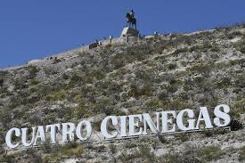
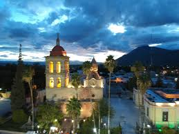
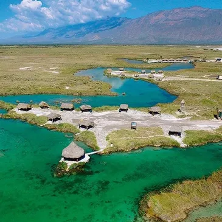
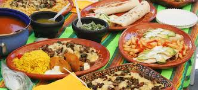
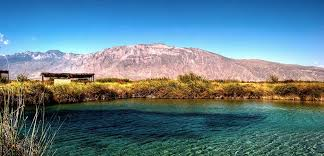
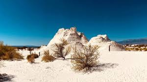
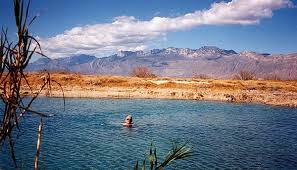
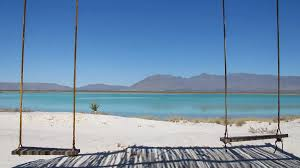

Poza Azul
Una de las más famosas por su color intenso.

Cuatro Ciénegas es un pueblo mágico reconocido por su riqueza natural y científica.
Es famoso por sus pozas de agua azul y ecosistemas únicos en el mundo.

Una de las más famosas por su color intenso.

Paisajes blancos únicos en México.
La cultura del lugar combina tradiciones del norte con su historia revolucionaria.
La gastronomía incluye carne seca, quesos y comida regional.





Cuatro Ciénegas es un destino único que combina naturaleza, ciencia y belleza. Es ideal para quienes buscan algo diferente.